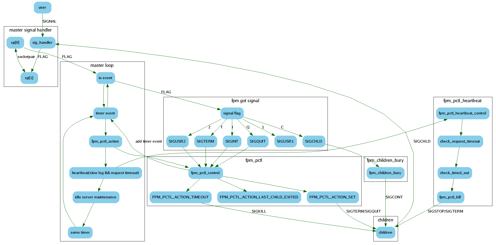

Table of Contents
2 涉及的源码
- sapi/fpm/fpm/fpm_signals.c
- sapi/fpm/fpm/fpm_signals.h
- sapi/fpm/fpm/fpm_events.c
- sapi/fpm/fpm/fpm_events.h
- sapi/fpm/fpm/fpm_process_ctl.c
- sapi/fpm/fpm/fpm_process_ctl.h
3 子进程信号相关处理
3.1 信号初始化
int fpm_signals_init_child()
{
struct sigaction act, act_dfl;
memset(&act, 0, sizeof(act));
memset(&act_dfl, 0, sizeof(act_dfl));
act.sa_handler = &sig_soft_quit;//设置了一个信号处理回调函数
act.sa_flags |= SA_RESTART;
act_dfl.sa_handler = SIG_DFL;//按系统默认的处理方法处理信号
//和fpm主进程不一样，直接关闭socket对，不使用socket对进行通信
close(sp[0]);
close(sp[1]);
//设置了相关需要关注的信号
if (0 > sigaction(SIGTERM, &act_dfl, 0) ||
0 > sigaction(SIGINT, &act_dfl, 0) ||
0 > sigaction(SIGUSR1, &act_dfl, 0) ||
0 > sigaction(SIGUSR2, &act_dfl, 0) ||
0 > sigaction(SIGCHLD, &act_dfl, 0) ||
0 > sigaction(SIGQUIT, &act, 0)) {
zlog(ZLOG_SYSERROR, "failed to init child signals: sigaction()");
return -1;
}
return 0;
}
3.2 信号处理回调函数
static void sig_soft_quit(int signo)
{
int saved_errno = errno;
//closing fastcgi listening socket will force fcgi_accept() exit immediately
close(0);
if (0 > socket(AF_UNIX, SOCK_STREAM, 0)) {
zlog(ZLOG_WARNING, "failed to create a new socket");
}
fpm_php_soft_quit(); // fpm_php_soft_quit() ==> in_shutdown = 1
errno = saved_errno;
}
4 主进程信号相关处理
简单的说， fpm主进程把信号事件转换为socket事件来进行处理
通过建立了一个socketpair，当有信号事件的时候，信号事件的回调函数里向socket里写一个信号标记，然后主进程从socket里读出这个标记进行处理
4.1 信号初始化
static int sp[2];
int fpm_signals_init_main()
{
struct sigaction act;
if (0 > socketpair(AF_UNIX, SOCK_STREAM, 0, sp)) {//建立socket对，通过这个把信号事件转换为socket事件，然后在fpm_events里通过io复用获取事件然后处理
zlog(ZLOG_SYSERROR, "failed to init signals: socketpair()");
return -1;
}
if (0 > fd_set_blocked(sp[0], 0) || 0 > fd_set_blocked(sp[1], 0)) {//设置成非阻塞
zlog(ZLOG_SYSERROR, "failed to init signals: fd_set_blocked()");
return -1;
}
//使在子进程中，此描述符并不关闭，仍可使用，但实际上子进程把这对socket关闭了
if (0 > fcntl(sp[0], F_SETFD, FD_CLOEXEC) || 0 > fcntl(sp[1], F_SETFD, FD_CLOEXEC)) {
zlog(ZLOG_SYSERROR, "falied to init signals: fcntl(F_SETFD, FD_CLOEXEC)");
return -1;
}
memset(&act, 0, sizeof(act));
act.sa_handler = sig_handler;//设置了信号处理回调函数，很重要
sigfillset(&act.sa_mask);
//设置了需要关注的信号
if (0 > sigaction(SIGTERM, &act, 0) ||
0 > sigaction(SIGINT, &act, 0) ||
0 > sigaction(SIGUSR1, &act, 0) ||
0 > sigaction(SIGUSR2, &act, 0) ||
0 > sigaction(SIGCHLD, &act, 0) ||
0 > sigaction(SIGQUIT, &act, 0)) {
zlog(ZLOG_SYSERROR, "failed to init signals: sigaction()");
return -1;
}
return 0;
}
4.2 信号处理回调函数
static void sig_handler(int signo)
{
static const char sig_chars[NSIG + 1] = {
[SIGTERM] = 'T',
[SIGINT] = 'I',
[SIGUSR1] = '1',
[SIGUSR2] = '2',
[SIGQUIT] = 'Q',
[SIGCHLD] = 'C'
};
char s;
int saved_errno;
if (fpm_globals.parent_pid != getpid()) {
//prevent a signal race condition when child process have not set up it's own signal handler yet
return;
}
saved_errno = errno;
s = sig_chars[signo];
write(sp[1], &s, sizeof(s));//向socket对里写上该信号的标记，完美的把信号转换为socket事件，由fpm_events从sp[0] 这个socket里读取数据，然后处理
errno = saved_errno;
}
4.3 信号事件的处理逻辑
在 sig_handler 里把信号事件转换为socket事件后，由fpm_events来处理信号，先回顾一下fpm_events的处理逻辑
void fpm_event_loop(int err)
{
static struct fpm_event_s signal_fd_event;
//fpm_signals_get_fd() ==> sp[0]
//设置了对socket sp[0]的可读监控，如果可读，则回调函数为fpm_got_signal
fpm_event_set(&signal_fd_event, fpm_signals_get_fd(), FPM_EV_READ, &fpm_got_signal, NULL);
fpm_event_add(&signal_fd_event, 0);
while (1) {
//................
ret = module->wait(fpm_event_queue_fd, timeout);//sp[0] socket可读，则执行函数 fpm_got_signal
//................
}
}
信号事件的处理主要是在函数 fpm_got_signal 里，根据不同的信号调用不同的函数实现其功能
主进程收到的这些信号有两种来源:
- 来自外部的，这种的最多，比如要求停止进程
- 来自子进程的，比如子进程暂停或者停止，都会向主进程发送一个信号
另外， 主进程也会向子进程发送信号 ，有以下的情况
- 为了记录慢请求，主进程会向子进程发送一个暂停的信号，记录完成后再发送一个恢复的信号
- 为了kill掉执行超时或者不必要的子进程
static void fpm_got_signal(struct fpm_event_s * ev, short which, void * arg)
{
char c;
int res, ret;
int fd = ev->fd;//这个fd就是sp[0]
do {
do {
res = read(fd, &c, 1);//读取信号处理回调函数sig_handler向sp[1]写入的那个信号标记
} while (res == -1 && errno == EINTR);
if (res <= 0) { //没有信号标记了，则退出
if (res < 0 && errno != EAGAIN && errno != EWOULDBLOCK) {
zlog(ZLOG_SYSERROR, "unable to read from the signal pipe");
}
return;
}
//信号处理回调函数sig_handler里信号量和信号标记的映射关系
//static const char sig_chars[NSIG + 1] = {
// [SIGTERM] = 'T',
// [SIGINT] = 'I',
// [SIGUSR1] = '1',
// [SIGUSR2] = '2',
// [SIGQUIT] = 'Q',
// [SIGCHLD] = 'C'
//};
switch (c) {
case 'C' : // SIGCHLD ，收到子进程的终止或者暂停的信号
zlog(ZLOG_DEBUG, "received SIGCHLD");
fpm_children_bury();
break;
case 'I' : // SIGINT，收到终止进程的信号
zlog(ZLOG_NOTICE, "Terminating ...");
fpm_pctl(FPM_PCTL_STATE_TERMINATING, FPM_PCTL_ACTION_SET);
break;
case 'T' : // SIGTERM，收到终止进程的信号
zlog(ZLOG_NOTICE, "Terminating ...");
fpm_pctl(FPM_PCTL_STATE_TERMINATING, FPM_PCTL_ACTION_SET);
break;
case 'Q' : // SIGQUIT，收到进程退出的信号
zlog(ZLOG_NOTICE, "Finishing ...");
fpm_pctl(FPM_PCTL_STATE_FINISHING, FPM_PCTL_ACTION_SET);
break;
case '1' : // SIGUSR1, 收到重新打开日志的信号
fpm_stdio_open_error_log(1);
fpm_log_open(1);
break;
case '2' : // SIGUSR2，收到reload的信号
zlog(ZLOG_NOTICE, "Reloading in progress ...");
fpm_pctl(FPM_PCTL_STATE_RELOADING, FPM_PCTL_ACTION_SET);
break;
}
if (fpm_globals.is_child) {
break;
}
} while (1);
return;
}
4.3.1 来自子进程信号的处理逻辑
void fpm_children_bury()
{
int status;
pid_t pid;
struct fpm_child_s * child;
//如果子进程暂停或者终止了，则返回相应的pid，否则退出循环
while ( (pid = waitpid(-1, &status, WNOHANG | WUNTRACED)) > 0) {
char buf[128];
int severity = ZLOG_NOTICE;
int restart_child = 1;
child = fpm_child_find(pid);//查找该子进程
if (WIFEXITED(status)) { //如果子进程正常退出
//...............
} else if (WIFSIGNALED(status)) { //如果子进程因为信号而退出的
//.................
} else if (WIFSTOPPED(status)) { //如果子进程暂停的话，这种主要是主进程先发了一个暂停信号给子进程，用户收集slow log
if (child && child->tracer) { //在tracer函数里会记录当前子进程的堆栈信息，然后再发一个恢复的信号给子进程
child->tracer(child);
}
continue;
}
if (child) {
//..........
fpm_pctl_child_exited();//如果是停止进程的话，则在该函数内会执行exit使主进程退出
//如果子进程异常退出个数超过一定的配置项，则要reload
if (last_faults && (WTERMSIG(status) == SIGSEGV || WTERMSIG(status) == SIGBUS)) {
//....................
if (restart_condition) {
zlog(ZLOG_WARNING, "failed processes threshold (%d in %d sec) is reached, initiating reload",
fpm_global_config.emergency_restart_threshold, fpm_global_config.emergency_restart_interval);
fpm_pctl(FPM_PCTL_STATE_RELOADING, FPM_PCTL_ACTION_SET);
}
}
//如果是异常退出的子进程，则需要由主进程来fork一个继续接受请求
if (restart_child) {
fpm_children_make(wp, 1 , 1, 0);
if (fpm_globals.is_child) {
break;
}
}
} else {
zlog(ZLOG_ALERT, "oops, unknown child (%d) exited %s. Please open a bug report (https://bugs.php.net).", pid, buf);
}
}
}
4.3.2 来自外部信号的处理逻辑
void fpm_pctl(int new_state, int action)
{
switch (action) {
case FPM_PCTL_ACTION_SET :
if (fpm_state == new_state) { // already in progress - just ignore duplicate signal
return;
}
//一开始，fpm_state 的初始值为 FPM_PCTL_STATE_NORMAL
switch (fpm_state) { // check which states can be overridden
case FPM_PCTL_STATE_NORMAL :
// 'normal' can be overridden by any other state
break;
case FPM_PCTL_STATE_RELOADING :
// 'reloading' can be overridden by 'finishing'
if (new_state == FPM_PCTL_STATE_FINISHING) break;
case FPM_PCTL_STATE_FINISHING :
// 'reloading' and 'finishing' can be overridden by 'terminating'
if (new_state == FPM_PCTL_STATE_TERMINATING) break;
case FPM_PCTL_STATE_TERMINATING :
// nothing can override 'terminating' state
zlog(ZLOG_DEBUG, "not switching to '%s' state, because already in '%s' state",
fpm_state_names[new_state], fpm_state_names[fpm_state]);
return;
}
fpm_signal_sent = 0;
fpm_state = new_state;
zlog(ZLOG_DEBUG, "switching to '%s' state", fpm_state_names[fpm_state]);
// fall down
case FPM_PCTL_ACTION_TIMEOUT :
fpm_pctl_action_next();
break;
case FPM_PCTL_ACTION_LAST_CHILD_EXITED :
fpm_pctl_action_last();
break;
}
}
static void fpm_pctl_action_next()
{
int sig, timeout;
if (!fpm_globals.running_children) {
fpm_pctl_action_last();
}
if (fpm_signal_sent == 0) {
if (fpm_state == FPM_PCTL_STATE_TERMINATING) {
sig = SIGTERM;
} else {
sig = SIGQUIT;
}
timeout = fpm_global_config.process_control_timeout;
} else {
if (fpm_signal_sent == SIGQUIT) {
sig = SIGTERM;
} else {
sig = SIGKILL;
}
timeout = 1;
}
fpm_pctl_kill_all(sig);//线所有的子进程发送信号
fpm_signal_sent = sig;
fpm_pctl_timeout_set(timeout);//设置定时器，回调函数为fpm_pctl
}
5 具体case分析
5.1 由外界触发的信号
5.1.1 终止进程操作
这个是通过发送一个TERM终止信号给fpm的主进程实现的
假设fpm主进程的pid为Pid，则执行以下命令就可以停掉php的主进程以及子进程:
kill -TERM Pid
按代码逻辑，实际上发生了这些事情
- fpm主进程收到TERM信号，插入调用了信号处理回调函数 sig_handler ，在该函数中会向 sp[1] 这个socket 写入T 这个信号标记字符
- 结束信号回调后，fpm主进程继续在 fpm_event_loop 里循环监听事件，因为已经向sp[1]写入数据了，这个时候io复用模型就会返回 sp[0]可读 ，调用回调函数 fpm_got_signal
- 在fpm_got_signal里 读出T 这个信号标记字符，执行 fpm_pctl ，一开始 fpm_state 的状态为 normal ，会走到 fpm_pctl_action_next
- 在fpm_pctl_action_next里， 会做两件事，第一个是向每个子进程发信号，第二个是注册一个定时器
- 向子进程发信号的时候，首先因为``fpm_signal_sent`` 初始化为0，fpm_state 为 FPM_PCTL_STATE_TERMINATING，所以向每个子进程发送的信号为 SIGTERM
- 注册的定时器的回调函数为 fpm_pctl_action ，其实是产生 fpm_pctl(FPM_PCTL_STATE_UNSPECIFIED, FPM_PCTL_ACTION_TIMEOUT) 这样一个调用
- 回到 fpm_got_signal 后，继续从sokcet里读信号标记字符，但是这个时候已经没有了，于是退出函数，回到 fpm_event_loop ，这个时候socket监听已经完成，开始处理定时器事件
- 在步骤6里提到会注册一个定时器，于是会执行 fpm_pctl_action 这个定时器的回调函数，即 fpm_pctl
- 在 fpm_pctl 里，因为传入的参数里action为 FPM_PCTL_ACTION_TIMEOUT，于是会继续调用 fpm_pctl_action_next
- 在等待 process_control_timeout 的时间后, 定时器会再次调用 fpm_pctl_action_next 时，fpm_signal_sent 已经为 SIGTERM，于是要向子进程发送的信号为 SIGKILL ，同时也设置了和之前一样的定时器事件(插入会被忽略)
- 总结一些，主进程向子进程发送了两次信号，第一次为 SIGTERM ， 第二次为 SIGKILL ，并结束了定时器时间，重新开始监听socket事件以及处理定时器事件
- 这个时候，子进程由于收到了 SIGKILL 信号，退出了，同时父进程即主进程会收到子进程退出的信号 SIGCHLD ， 于是信号处理回调函数 sig_handler 会向 sp[1] 这个socket 写入C 这个信号标记字符
- 当主进程处理socket事件的时候，io复用模型就会返回 sp[0]可读 ，调用回调函数 fpm_got_signal
- 在fpm_got_signal里 读出C 这个信号标记字符，执行 fpm_children_bury ，通过 waitpid 获取到退出子进程的status，来判断是暂停、正常退出或者异常退出了
- 由于是被kill的，于是会走到 WIFSIGNALED(status) 非0这个分支上，打印一条日志，之后走到 fpm_pctl_child_exited ，当处理到最后一个子进程的时候，就会走到 fpm_pctl
- 由于action为 FPM_PCTL_ACTION_LAST_CHILD_EXITED ，则调用 fpm_pctl_action_last ，这个时候 fpm_state 为 FPM_PCTL_STATE_TERMINATING，于是调用 fpm_pctl_exit
- 在fpm_pctl_exit里释放完各种资源，调用 exit ，至此主进程也退出了
存在的问题
主进程会调用两次fpm_pctl_action_next，在fpm_pctl_action_next里会向子进程发信号，同时设置定时器
第一次的定时器设置成功了，但是第二次的定时器却设置失败了 ，原因是在插入的时候定时器列表里已经有了 pctl_event 了
static struct fpm_event_s * fpm_event_queue_isset(struct fpm_event_queue_s * queue, struct fpm_event_s * ev)
{
while (queue) {
if (queue->ev == ev) { //~~~,here
return ev;
}
queue = queue->next;
}
return NULL;
}
大概的场景是这样的，fpm的主进程在遍历定时器列表的时候，当遍历到 pctl_event 这个定时器的时候，会走到重新插入 pctl_event 这个定时器的逻辑
因为重复，所以插入失败了，但是 pctl_event 这个定时器插入的时候是 一次性的，执行完回调函数后，会从链表里删除
这个不会影响结果，但是会是一个坑
5.1.2 优雅停止服务操作
其实这个也不是啥优雅退出，子进程还没有执行完就被强制退出了
具体是通过发送一个SIGQUIT终止信号给fpm的主进程实现的
假设fpm主进程的pid为Pid，则执行以下命令就可以停掉php的主进程以及子进程:
kill -QUIT Pid
按代码逻辑，实际上发生了这些事情
- fpm主进程收到QUIT信号，插入调用了信号处理回调函数 sig_handler ，在该函数中会向 sp[1] 这个socket 写入Q 这个信号标记字符
- 结束信号回调后，fpm主进程继续在 fpm_event_loop 里循环监听事件，因为已经向sp[1]写入数据了，这个时候io复用模型就会返回 sp[0]可读 ，调用回调函数 fpm_got_signal
- 在fpm_got_signal里 读出Q 这个信号标记字符，执行 fpm_pctl ，一开始 fpm_state 的状态为 normal ，会走到 fpm_pctl_action_next
- 在fpm_pctl_action_next里， 会做两件事，第一个是向每个子进程发信号，第二个是注册一个定时器
- 向子进程发信号的时候，首先因为``fpm_signal_sent`` 初始化为0，fpm_state 为 FPM_PCTL_STATE_FINISHING，所以向每个子进程发送的信号为 SIGQUIT , 子进程收到信号后会设置全局变量 in_shutdown 为 1 ，代码中有多处判断如果in_shutdown大于0，则直接返回，直到子进程退出
- 注册的定时器的回调函数为 fpm_pctl_action ，其实是产生 fpm_pctl(FPM_PCTL_STATE_UNSPECIFIED, FPM_PCTL_ACTION_TIMEOUT) 这样一个调用
- 回到 fpm_got_signal 后，继续从sokcet里读信号标记字符，但是这个时候已经没有了，于是退出函数，回到 fpm_event_loop ，这个时候socket监听已经完成，开始处理定时器事件
- 有两种情况，一种是如果在等待 process_control_timeout 的时间后, 还没有收到子进程退出的信号，则定时器会调用 fpm_pctl_action ，继续向子进程发送一个 SIGTERM 信号, 然后一直等待子进程的信号，另外一种是在这个等待时间之内，子进程已经发生过来子进程退出的信号 SIGCHLD 了，最终的处理逻辑都会是信号处理回调函数 sig_handler 就向``sp[1]`` 这个socket 写入C 这个信号标记字符
- io event事件发现sp[0]可读，于是调用回调函数 fpm_got_signal ，在fpm_got_signal里 读出C 这个信号标记字符，执行 fpm_children_bury ，通过 waitpid 获取到退出子进程的status，这次判断出子进程是正常退出的
- 之后走到 fpm_pctl_child_exited ，当处理到最后一个子进程的时候，就会走到 fpm_pctl，fpm_pctl_exit里释放完各种资源，调用 exit ，至此主进程也退出了
- 总结一些，优化退出的时候，主进程向子进程发了一个 SIGQUIT 信号(或者是 SIGQUIT + SIGTERM )，然后就收到子进程退出的 SIGCHLD 信号了，然后主进程也就退出了
5.1.3 重新打开日志操作
发送的是SIGUSR1信号，逻辑上和前面的一样， fpm_got_signal 发现是信号标记为1的时候，就重新打开日志，比较简单
5.1.4 reload操作
具体是通过发送一个SIGUSR2信号给fpm的主进程实现的
假设fpm主进程的pid为Pid，则执行以下命令就可以停掉php的主进程以及子进程:
kill -SIGUSR2 Pid
按代码逻辑，实际上发生了这些事情
- fpm主进程收到QUIT信号，插入调用了信号处理回调函数 sig_handler ，在该函数中会向 sp[1] 这个socket 写入2 这个信号标记字符
- 结束信号回调后，fpm主进程继续在 fpm_event_loop 里循环监听事件，因为已经向sp[1]写入数据了，这个时候io复用模型就会返回 sp[0]可读 ，调用回调函数 fpm_got_signal
- 在fpm_got_signal里 读出2 这个信号标记字符，执行 fpm_pctl ，一开始 fpm_state 的状态为 normal ，会走到 fpm_pctl_action_next
- 在fpm_pctl_action_next里， 会做两件事，第一个是向每个子进程发信号，第二个是注册一个定时器
- 向子进程发信号的时候，首先因为``fpm_signal_sent`` 初始化为0，fpm_state 为 FPM_PCTL_STATE_RELOADING，所以向每个子进程发送的信号为 SIGQUIT , 子进程收到信号后会设置全局变量 in_shutdown 为 1 ，代码中有多处判断如果in_shutdown大于0，则直接返回，直到子进程退出
- 注册的定时器的回调函数为 fpm_pctl_action ，其实是产生 fpm_pctl(FPM_PCTL_STATE_UNSPECIFIED, FPM_PCTL_ACTION_TIMEOUT) 这样一个调用
- 回到 fpm_got_signal 后，继续从sokcet里读信号标记字符，但是这个时候已经没有了，于是退出函数，回到 fpm_event_loop ，这个时候socket监听已经完成，开始处理定时器事件
- 有两种情况，一种是如果在等待 process_control_timeout 的时间后, 还没有收到子进程退出的信号，则定时器会调用 fpm_pctl_action ，继续向子进程发送一个 SIGTERM 信号, 然后一直等待子进程的信号，另外一种是在这个等待时间之内，子进程已经发生过来子进程退出的信号 SIGCHLD 了，最终的处理逻辑都会是信号处理回调函数 sig_handler 就向``sp[1]`` 这个socket 写入C 这个信号标记字符
- io event事件发现sp[0]可读，于是调用回调函数 fpm_got_signal ，在fpm_got_signal里 读出C 这个信号标记字符，执行 fpm_children_bury ，通过 waitpid 获取到退出子进程的status，这次判断出子进程是正常退出的
- 之后走到 fpm_pctl_child_exited ，当处理到最后一个子进程的时候，就会走到 fpm_pctl，进而走到 fpm_pctl_action_last 里， 在 fpm_pctl_action_last 里判断为reload请求，则执行 fpm_pctl_exec , 从而执行 execvp 命令
- 这个时候， 主进程(称为F) 开始重新执行 main 主函数，重复了一轮fpm启动的逻辑，主进程F会 fork出新的主进程X ，然后这个老的主进程退出，新的主进程X会fork出子进程，然后主进程监听由信号产生的socket事件以及定时器事件
- 需要注意的是在 fpm_sockets_init_main 里，新的主进程X会继承老的主进程F的socket
5.2 由主进程触发的信号
fpm的主进程有定时器事件，周期性观察子进程的状态，比如是否执行超时或者是否需要记录slow log等等
有三个定时器任务:
- fpm_pctl_action : 这个在前面已经介绍过了，主进程收到由外界产生的QUIT等信号时，会先向子进程发一个信号，然后就设置了 fpm_pctl_action 这个一次性的定时器，用于向子进程发送第二个信号
- fpm_pctl_heartbeat : 主要是周期性观察子进程，做两件事情，一个是观察子进程否执行超时(由主进程kill后再fork子进程)或者执行超过一定的时间，需要记录slow log
- fpm_pctl_perform_idle_server_maintenance_heartbeat : 主要是周期性观察子进程，做三件事情，第一个是更新 fpm scoreboard 的状态，第二个是判断pm的类型，如果是 PM_STYLE_ONDEMAND 则kill掉不需要的空闲子进程，如果是 PM_STYLE_DYNAMIC ，也是kill掉不需要的空闲子进程或者增加子进程
主要介绍一下 fpm_pctl_heartbeat ，即监控子进程的执行时间，先来看 fpm_pctl_heartbeat ，定时器调用这个函数时候，传入的参数 which 都是 FPM_EV_TIMEOUT ，实际上就是调用 fpm_pctl_check_request_timeout
在 fpm_pctl_check_request_timeout 里也就是遍历每个pool，看是否执行超时或者需要记录slow log，然后检查每个子进程
static void fpm_pctl_check_request_timeout(struct timeval* now)
{
struct fpm_worker_pool_s* wp;
for (wp = fpm_worker_all_pools; wp; wp = wp->next) {
int terminate_timeout = wp->config->request_terminate_timeout;
int slowlog_timeout = wp->config->request_slowlog_timeout;
struct fpm_child_s* child;
if (terminate_timeout || slowlog_timeout) {
for (child = wp->children; child; child = child->next) {
fpm_request_check_timed_out(child, now, terminate_timeout, slowlog_timeout);
}
}
}
}
在 fpm_request_check_timed_out 里就做两件事，检查是否执行超时和是否需要记录slow log
- slow log: 主进程会发一个 SIGSTOP信号 给子进程，让子进程暂停，同时设置了暂停后的回调函数 fpm_php_trace ，子进程暂停后，又会发一个 SIGCHLD信号 给主进程，主进程收到后(fpm_got_signal -> fpm_children_bury -> WIFSTOPPED(status))，执行设置的回调函数 fpm_php_trace ，在这个函数里会采集子进程的状态，然后再发一个 SIGCONT信号 给子进程，让子进程继续执行
- terminate_timeout: 主进程会发一个 SIGTERM信号 给子进程，子进程收到后又会发一个 SIGCHLD信号 给主进程，主进程(fpm_got_signal -> fpm_children_bury -> WIFSIGNALED(status))会重新fork子进程
void fpm_request_check_timed_out(struct fpm_child_s* child, struct timeva* now, int terminate_timeout, int slowlog_timeout)
{
struct fpm_scoreboard_proc_s proc, * proc_p;
proc_p = fpm_scoreboard_proc_acquire(child->wp->scoreboard, child->scoreboard_i, 1);
if (!proc_p) {
zlog(ZLOG_WARNING, "failed to acquire scoreboard");
return;
}
proc = * proc_p;
fpm_scoreboard_proc_release(proc_p);
#if HAVE_FPM_TRACE
if (child->slow_logged.tv_sec) {
if (child->slow_logged.tv_sec != proc.accepted.tv_sec || child->slow_logged.tv_usec != proc.accepted.tv_usec) {
child->slow_logged.tv_sec = 0;
child->slow_logged.tv_usec = 0;
}
}
#endif
if (proc.request_stage > FPM_REQUEST_ACCEPTING && proc.request_stage < FPM_REQUEST_END) { //这个条件设置的太小了，会导致php 出现fin包丢失而hang住的
char purified_script_filename[sizeof(proc.script_filename)];
struct timeval tv;
timersub(now, &proc.accepted, &tv);
#if HAVE_FPM_TRACE
if (child->slow_logged.tv_sec == 0 && slowlog_timeout &&
proc.request_stage == FPM_REQUEST_EXECUTING && tv.tv_sec >= slowlog_timeout) {
str_purify_filename(purified_script_filename, proc.script_filename, sizeof(proc.script_filename));
child->slow_logged = proc.accepted;
child->tracer = fpm_php_trace; //设置了暂停后的回调函数，当子进程暂停后，会发信号SIGCHLD给主进程，主进程会调用child->tracer这个回调函数的
fpm_trace_signal(child->pid);//在fpm_trace_signal里会发一个SIGSTOP信号给子进程，让子进程暂停
zlog(ZLOG_WARNING, "[pool %s] child %d, script '%s' (request: \"%s %s\") executing too slow (%d.%06d sec), logging",
child->wp->config->name, (int) child->pid, purified_script_filename, proc.request_method, proc.request_uri,
(int) tv.tv_sec, (int) tv.tv_usec);
}
else
#endif
if (terminate_timeout && tv.tv_sec >= terminate_timeout) {
str_purify_filename(purified_script_filename, proc.script_filename, sizeof(proc.script_filename));
fpm_pctl_kill(child->pid, FPM_PCTL_TERM);//发一个SIGTERM信号给子进程，子进程收到后又会发一个SIGCHLD给主进程，主进程会重新fork子进程
zlog(ZLOG_WARNING, "[pool %s] child %d, script '%s' (request: \"%s %s\") execution timed out (%d.%06d sec), terminating",
child->wp->config->name, (int) child->pid, purified_script_filename, proc.request_method, proc.request_uri,
(int) tv.tv_sec, (int) tv.tv_usec);
}
}
}
6 总结
- fpm通过socket对把 信号事件转换为socket事件 来处理
- fpm主进程轮询 监听socket事件与定时器事件
- 主进程收到外界信号后，会向子进程发送信号，而子进程也会回复一个 SIGCHLD 信号给主进程，由主进程判断子进程退出的原因，然后进行相应的处理
最后再附上一张信号传递图
